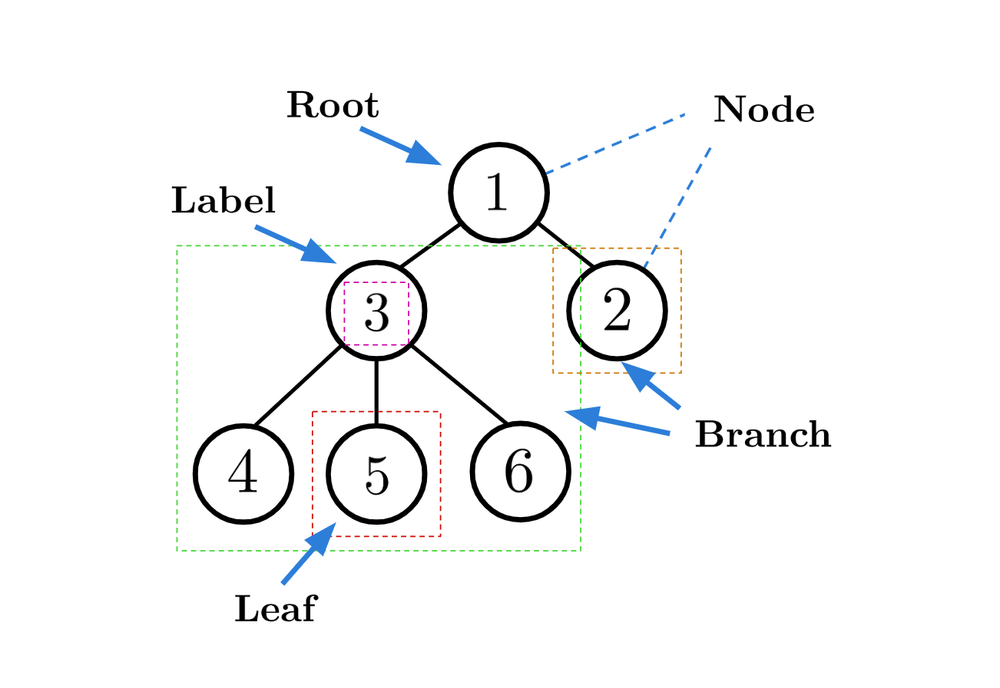
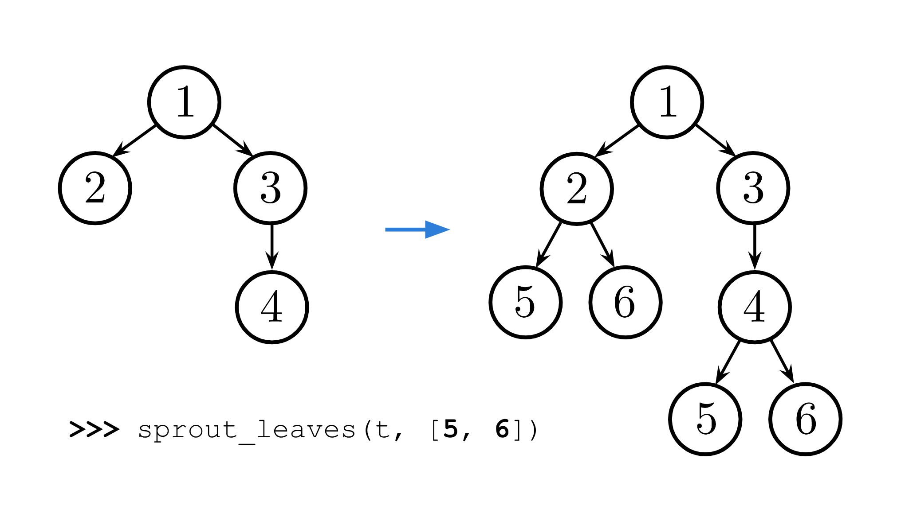
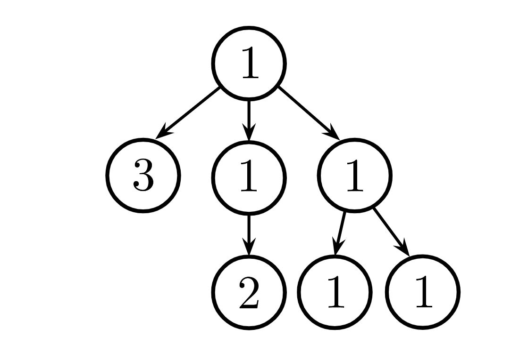

Rao Discussion 5: Trees, Data Abstraction
This discussion worksheet is for the Rao offering of CS 61A. Your work is not graded and you do not need to submit anything.
Data Abstraction
So far, we have encountered several data types: numbers, strings, booleans, lists, tuples, and dictionaries. But what if we want to represent more complicated things — such as the objects we encounter in real life?
Enter the idea of data abstraction, which allows us to build and use objects in code that represent a compound value.
An abstract data type consists of two types of functions:
- Constructors: functions that build instances of the abstract data type.
- Selectors: functions that retrieve information from instances of the ADT.
An integral part of data abstraction is the concept of abstraction. Users of the abstract data type have access to an interface of defined actions (i.e. constructors and selectors) they can take with the ADT. The user of the ADT does not need to know how the constructors and selectors are implemented. The nature of abstraction allows whoever uses them to assume that the functions have been written correctly and work as described.
This is called the abstraction barrier!
In fact, interacting within an ADT outside of its interface of constructors and selectors is called "violating the abstraction barrier" and is strongly discouraged (even when it doesn't produce an error).
In this way, data abstraction mimics how we think about the world. For example, a car is a complicated machine, but it has a simple interface by which we interact with it: the wheel, the gas pedal, the gear shift. If you want to drive a car, you don't need to know how the engine was built or what kind of material the tires are made of. It's easy to drive a car because of the suppression of complexity that abstraction provides us.
For the car, the principle of the abstraction barrier also applies. If we want to start the car, we should use the provided interface of turning the ignition key, rather than getting out, popping the hood, and messing around with the engine. While you could likely do that if you had enough knowledge, it is unnecessarily costly and highly dependent on how exactly the car was constructed. What are you going to do if the car is electric?
When you're writing code using ADTs that have been provided for you, make sure that you're never assuming anything about the ADT other than that it can be constructed with its constructor and its information can be accessed by selectors. Your code should never depend on the specific implementation of the ADT under the hood.
Rationals
Q1: Extending Rationals
First, fill in the following code to implement the rational ADT from lecture.
Run in 61A CodeQ2: Divide
Next, we'll be implementing two additional functions to handle operations between rational numbers.
First, implement div_rat(x,y), which returns the result of dividing rational number x by
rational number y.
Q3: Less Than
Finally, implement lt_rat(x, y), which returns True if and only if rational number x is
less than rational number y.
Trees
In computer science, trees are recursive data structures that are widely used in various settings and can be implemented in many ways.
In this class, we consider a tree an abstract data type (ADT). This
will act as our own custom type, much like an integer or string!
A tree has a root label and a sequence of branches, each of which is also a tree. A leaf is a tree with no branches.
- The arguments to the constructor
treeare the label for the root node and an optional list of branches. - If no branches parameter is provided, the default value
[]is used. - The selectors for these are
labelandbranches.
Remember branches returns a list of trees and not a tree directly.
It's important to distinguish between working with a tree and working with a sequence of trees.
We have also provided a convenience predicate function, is_leaf, which returns whether a tree is a leaf.
Let's try to create the tree t from above:
t2 = tree(3,
[tree(4),
tree(5),
tree(6)])
t1 = tree(1,
[t2,
tree(2)])The following is an illustration of tree t1.

We note that there are many trees in this data structure. For example,
t1 contains the tree t2. So we may refer to a tree as a node
of a larger structure. Thus, t1 and t2 are nodes (locations) in
the tree t1, and t1 is the root node of this tree.
In the tree t1, t2 is a child of t1, and t1 is the
parent of t2 since t2 is a branch of t1.
A path in a tree is a sequence of nodes where tree i+1 is the
child of tree i. We say the path is from the first node in the
sequence to the last node. The height of a tree is this the
maximum length path to a leaf in the tree, where a leaf is
a tree with no branches.
The depth of a node n in a tree t is the length of the
path from the root node of t to n. For example, in the tree t1,
the depth of node labeled 4 is 2.
Tree ADT Implementation
For your reference, we have provided our implementation of trees as a data abstraction. However, as with any data abstraction, we should only concern ourselves with what our functions do rather than their specific implementation!
def tree(label, branches=[]):
"""Construct a tree with the given label value and a list of branches."""
return [label] + list(branches)
def label(tree):
"""Return the label value of a tree."""
return tree[0]
def branches(tree):
"""Return the list of branches of the given tree."""
return tree[1:]
def is_leaf(tree):
"""Returns True if the tree's list of branches is empty, and False otherwise."""
return not branches(tree)Q4: Tree Abstraction Barrier
Consider a tree t constructed by calling
tree(1, [tree(2), tree(4)]). For each of the following expressions,
answer these two questions:
- What does the expression evaluate to?
- Does the expression violate any abstraction barriers? If so, write an equivalent expression that does not violate abstraction barriers.
label(t)t[0]label(branches(t)[0])is_leaf(t[1:][1])[label(b) for b in branches(t)]Challenge:
branches(tree(5, [t, tree(3)]))[0][0]
Q5: Height
Write a function that returns the height of a tree. Recall that the height of a tree is the number of non-root nodes in the longest path from the root to a leaf.
Run in 61A CodeQ6: Find Path
Write a function find_path that takes in a tree t with unique labels and a
value x. It returns a list containing the labels of the nodes along the path
from the root of t to the node labeled x.
If x is not a label in t, return None. Assume that the labels of t are unique.
For the following tree, find_path(t, 5) should return [2, 7, 6, 5].

Q7: Sprout Leaves
Define a function sprout_leaves that takes in a tree, t, and a list of
leaf labels, leaves. It produces a new tree that is identical to t, but where each
old leaf node has new branches, for each label in leaves.
For example, suppose we have the tree t = tree(1, [tree(2), tree(3, [tree(4)])]). Calling
sprout_leaves(t, [5, 6]) produces the following tree:

Run in 61A CodeAdditional Practice
Q8: Perfectly Balanced
Part A:
Implement sum_tree, which returns the sum of all the labels in tree t.
Part B:
Implement balanced, which returns whether every branch of t has the
same total sum and that the branches themselves are also balanced.

- For example, the tree above is balanced because each branch has the same total sum, and each branch is also itself balanced.
Run in 61A CodeHint: If we ever need to select a specific branch, we will need to break index into our branches list!
Challenge: Solve both of these parts with just 1 line of code each.